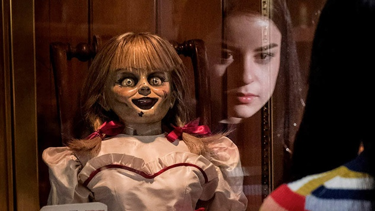

My name is Naina Sahiri and I am from India. I love exploring places with my family and friends. I love Cooking, Listening music, Reading books and Watching Horror movies. I have worked as Web developer for 2 Years. My goal is to become full stack developer.
This was a very good movie, I really enjoyed the time and effort they put in at the beginning of the movie. It is the kind of movie to make you think and rethink. The past is never dead, quoted from William Faulkner was a key point in this movie, and also there were some themes from the miniseries Roots by Alex Haley. I wish the ending of the movie was better. It was as if they were running out of time or money to really bring home the point.
